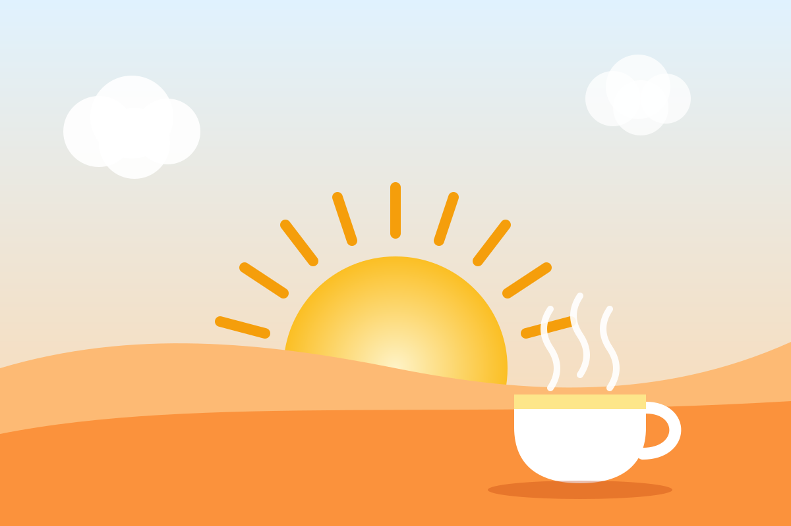

Как правильно начать день
Утро задаёт тон всему дню. Не нужно вставать в пять утра и обливаться ледяной водой: хватит нескольких простых действий, которые займут около двадцати минут.

Главное — постоянство
Время подъёма важнее, чем то, насколько оно раннее. Люди различаются по хронотипу: одним легко вставать в шесть, другим — в девять. Выберите время, которое позволяет спать 7–9 часов, и придерживайтесь его каждый день, включая выходные.
Многократные «ещё пять минут» обычно не добавляют отдыха. Лучше поставить один будильник на реальное время подъёма и положить телефон подальше от кровати.
Утренний ритуал за 20 минут
| Время | Что сделать | Зачем |
|---|---|---|
| 0–2 мин | Откройте шторы, выйдите на балкон или к окну | Яркий свет сообщает мозгу, что день начался |
| 2–5 мин | Выпейте стакан воды | Восполнить жидкость после ночи |
| 5–15 мин | Зарядка, суставная гимнастика или короткая прогулка | Движение разгоняет кровообращение и бодрит |
| 15–20 мин | Запишите три главных дела на день | Ясный план снижает тревогу и экономит силы |
Готовый комплекс на 10 минут — в статье о мобильности и йоге.
Завтрак
Хороший завтрак сочетает белок и клетчатку — так сытость сохраняется до обеда. Несколько идей:
- омлет с овощами и цельнозерновым тостом;
- овсянка с ягодами, орехами и ложкой йогурта;
- творог или натуральный йогурт с фруктами;
- цельнозерновой хлеб с яйцом, сыром и свежими овощами.
Если утром совсем нет аппетита — не заставляйте себя. Возьмите с собой перекус: фрукт, йогурт или горсть орехов.
Чек-лист на сегодня
Моё утро
Отметки сохраняются только в вашем браузере и обнуляются на следующий день.
Чего лучше избегать
- Соцсети и новости в первые минуты. Поток чужих событий и тревожных заголовков сразу забирает внимание. Дайте себе хотя бы 20 минут без ленты.
- Спешка. Если каждое утро проходит в беготне, поставьте будильник на 15 минут раньше — и ложитесь на 15 минут раньше.
- Сладкий завтрак на бегу. Булочка с кофе даёт быструю энергию и такой же быстрый спад к середине утра.
Если вы «сова»
Сдвигайте режим постепенно — на 15 минут раньше каждые несколько дней. Помогают яркий свет сразу после пробуждения и приглушённый вечером. Резкий переход «с понедельника встаю в шесть» обычно заканчивается недосыпом и возвратом к старому графику.